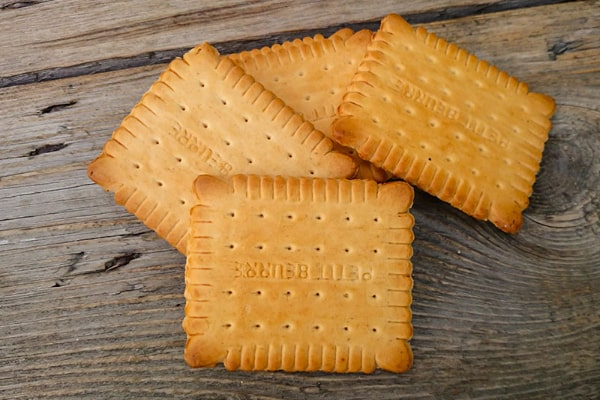
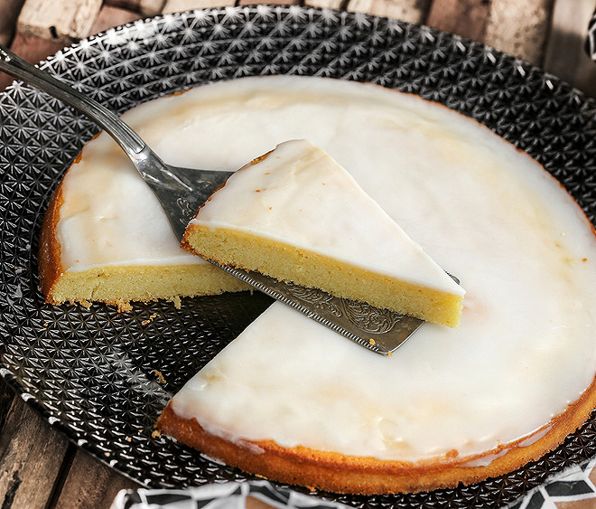

Nantes isn't usually the first place people think of for French food, but it quietly gave the country two of its best-known treats — one industrial, one homemade.

Le Petit-Beurre LU
Created in Nantes in 1886 by Louis Lefèvre-Utile, the Petit-Beurre is the biscuit with the crimped edges and rounded corners that most French households still keep in the cupboard. The LU biscuit factory, right by the Loire, is still standing — its tower is now a cultural venue rather than a working factory, but the biscuit itself is made in the billions every year.
Best with a morning coffee

Gâteau nantais
A dense almond cake soaked in rum and topped with a thin white glaze. The rum is a nod to Nantes' history as a port city trading with the Caribbean, and the recipe has stayed close to its 19th-century roots: butter, sugar, ground almonds, eggs, and just enough flour to hold it together.
Traditionally paired with a glass of Muscadet
Both are easy to find in any bakery or supermarket around Nantes — the Petit-Beurre in its yellow box, the gâteau nantais usually sold whole or by the slice in local pâtisseries.